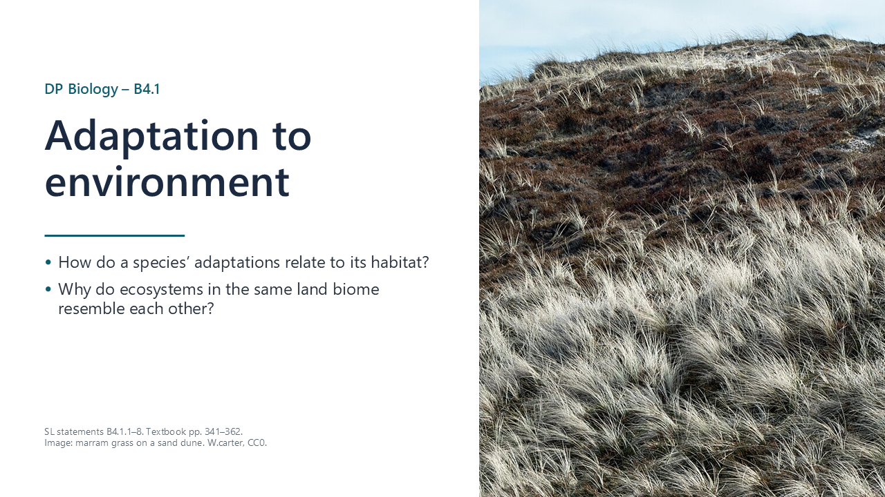
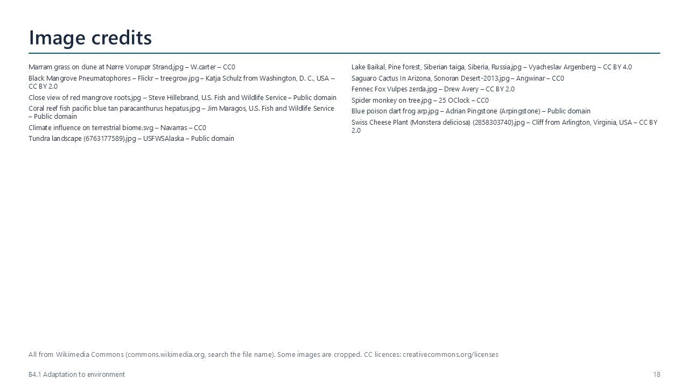
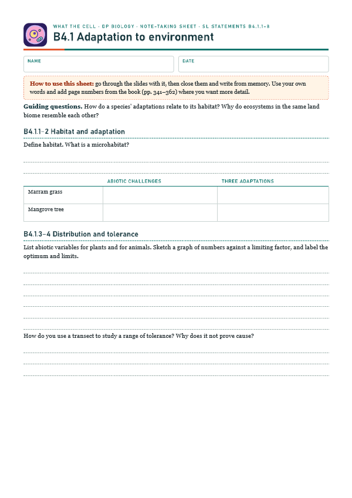
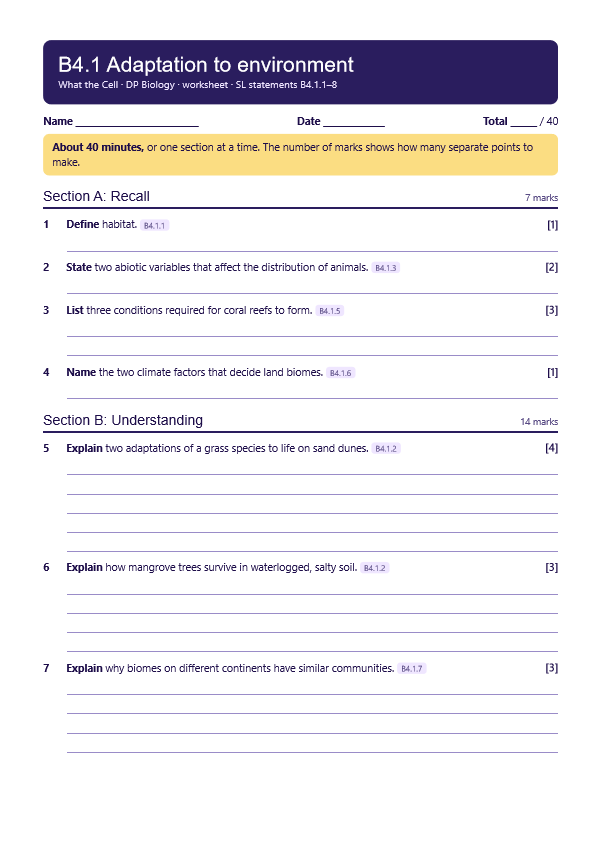
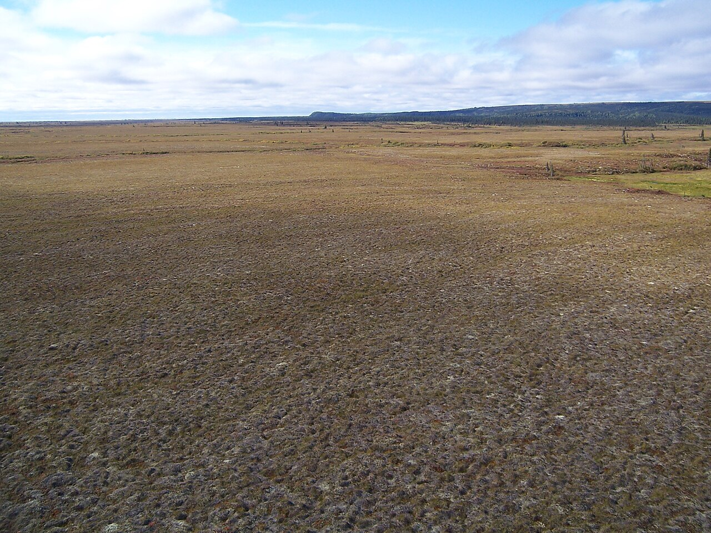
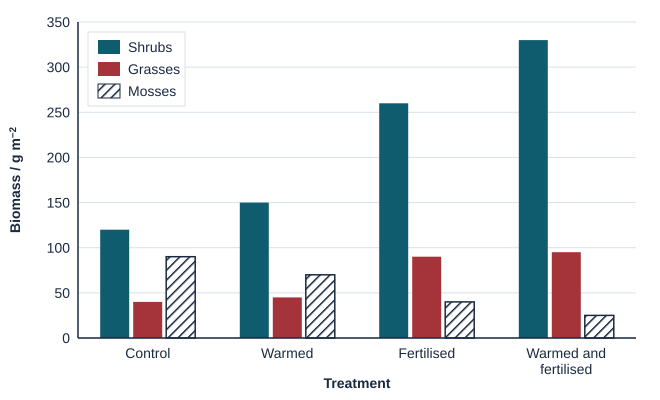
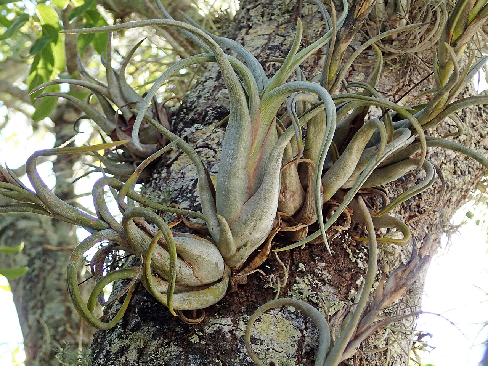
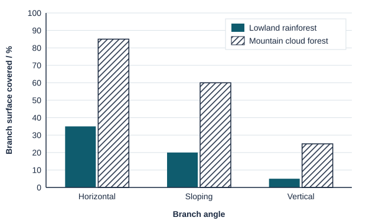

Habitat
pp. 341–342A habitat is the place where an organism, population, species or community lives. A description can include geographical and physical location, and the type of ecosystem.

Written for this site from the class slides, with textbook page references for each statement. The chapter is on pages 341–362 of the course textbook. Image credits are on slide 33.
A habitat is the place where an organism, population, species or community lives. A description can include geographical and physical location, and the type of ecosystem.
| Plant | Challenges | Adaptations |
|---|---|---|
| Marram grass, sand dunes | Little water, salt spray, wind | Rolled leaves, sunken stomata, thick cuticle, deep roots and rhizomes |
| Mangrove trees, swamps | Anaerobic, salty, soft mud | Pneumatophores, stilt roots, salt glands |
Plants are affected by temperature, water, light, soil pH, salinity and mineral nutrients. Animals are affected by temperature, water and breeding sites, among others. A species' adaptations give it a range of tolerance.
Each species thrives in an optimum range, is under stress towards the limits, and cannot survive beyond them. A transect lets you correlate the distribution of a species with an abiotic variable, using data you collect yourself. A correlation alone does not prove cause.

Reefs need shallow, clear, warm water with suitable pH and salinity. Most reef-building corals live less than 25 m deep, at about 23–29 °C. Corals have a mutualistic relationship with algae, the zooxanthellae, which need light.
For any given temperature and rainfall pattern, one type of natural ecosystem is likely to develop. A graph of these two variables shows where each biome is found.
Similar abiotic conditions produce similar selection pressures, and so convergent evolution gives similar communities. Know the climates of tropical forest, temperate forest, taiga, grassland, tundra and hot desert.
| Species | Biome | Adaptations |
|---|---|---|
| Saguaro cactus | Hot desert | Water-storing stem, spines, shallow wide roots |
| Fennec fox | Hot desert | Large ears lose heat, active at night |
| Spider monkey | Rainforest | Long limbs and a gripping tail |
| Poison dart frog | Rainforest | Toxins and warning colours |
Select a video to play it here. Select it again to close it.
Print this guide and complete it as you work through the slides and videos. It asks for your own explanations, so close the notes while you try each section.

The self-check needs JavaScript to run.
A printable worksheet covering all eight statements, from quick recall to data questions and a longer answer. It has 40 marks and takes about 40 minutes, or you can do one section at a time.
Your teacher has the mark scheme.

Questions built on realistic experimental data, in the style of Paper 1B and Paper 2. Work them on paper and show your working. 12 marks in total. Your teacher has the mark scheme.

Plots of Arctic tundra were given one of four treatments for ten years: none (control), warming with small clear greenhouses, added fertiliser (nitrogen and phosphorus), or both. The graph shows the mean biomass of three groups of plants at the end.


Epiphytes, such as mosses, ferns and orchids, grow on the branches of trees and take water from rain and mist. The percentage of branch surface covered by epiphytes was measured in a lowland rainforest and a mountain cloud forest, on branches at three angles.

You will need: Tape measure, light meter or phone app, thermometer, quadrat
Safety: Check the site first. Watch for trip hazards and stinging plants.
Carry this out with your teacher's supervision and follow your school's lab rules.
Mapping climate against vegetation reveals biome patterns that help to explain where organisms live.
Nature has no sharp borders between biomes. Consider whether our categories describe nature or simply help us to think about it.
Summarised in our own words. Use each code to find the exact wording in your textbook or the IB subject guide.
B4.1 has no HL-only content. SL and HL students learn the same material here.
© 2026 Akash Parthi Bendran. Please ask before using or sharing any resources from this site: see permission to use.